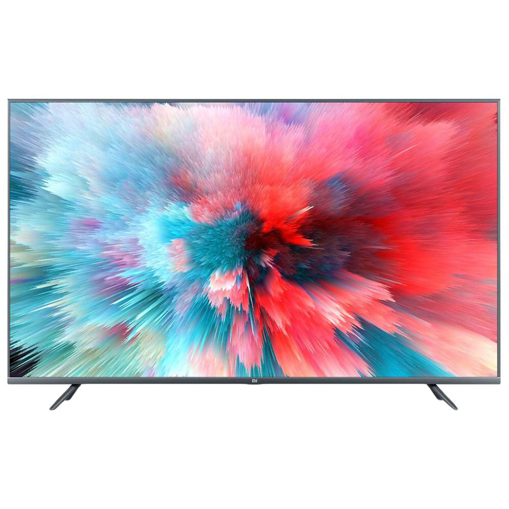

Телевизор XIAOMI Mi TV 4S 43, 43", Ultra HD 4K
| Заводские данные | |
|---|---|
| Гарантия | 1 год |
| Диагональ | 43 " |
| Разрешение | 3840 x 2160 |
| Формат экрана | 16:9 |
| Яркость экрана | 220 кд/м2 |
| Контрастность | 1.000 :1 |
| Время отклика пикселя | 8 мс |
| Углы обзора | 178 по горизонтали, 178 по вертикали |
| Тип панели | LED |
Комфортный в использовании LED телевизор XIAOMI Mi TV 4S 43 прекрасно впишется в любой интерьер помещения.
Модель имеет диагональ 43 дюйма, поэтому отлично подойдет для любой гостиной комнаты. Его можно установить
на удобную подставку в виде двух устойчивых ножек. Кроме того, есть возможность размещения телевизора на стене с помощью специального крепежного элемента.
Модель LED телевизора XIAOMI Mi TV 4S 43 оборудована тюнерами DVB-T2 и DVB-С для просмотра цифрового и кабельного телевидения.
Благодаря поддержке SMART TV осуществляется мгновенный поиск наиболее интересного контента в сети. Этому также способствует
модуль Wi-Fi для беспроводного подключения к интернету. Телевизор оборудован нескольким разъемами HDMI и двумя разъемами USB,
к которым происходит подключение внешних устройств и накопителей памяти. Реалистичное изображение в разрешении 3840x2160 пикселей воспроизводится с удивительной четкостью.